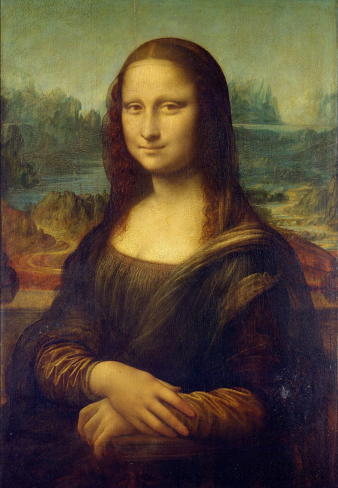
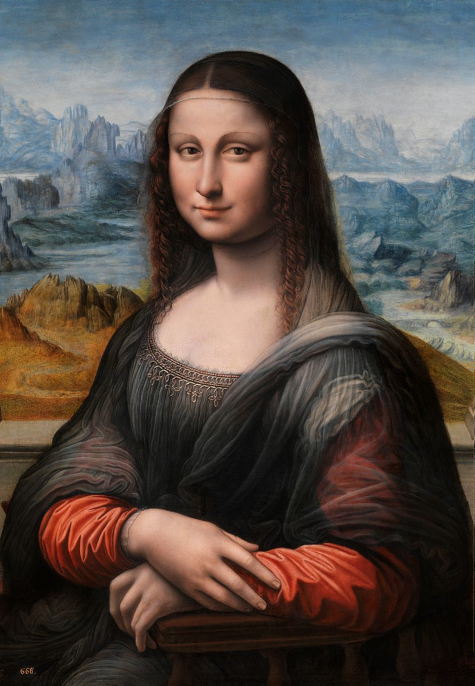

The idea for Remake Gallery was inspired by the story of the Prado Mona Lisa — a painting long dismissed as a copy, until modern imaging revealed that its underdrawing matched Leonardo’s Mona Lisa stroke for stroke. It turned out not to be a forgery at all, but a contemporaneous study, likely painted by one of Leonardo’s students alongside the master himself.

